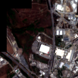
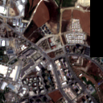
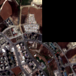
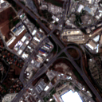
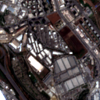
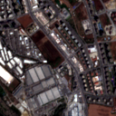
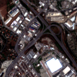
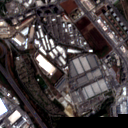
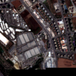

ESENYURT_SEG_01_01
- Konum
- Satır 1, sütun 1
- Boyut
- 128 × 128
- Geçerli piksel
- %90.79
Sentinel-2 RGB mozaiği, semantik segmentasyon modelinin çıkarım aşamasında kullanılması için sabit boyutlu ve coğrafi bilgili karolara ayrılmıştır.








